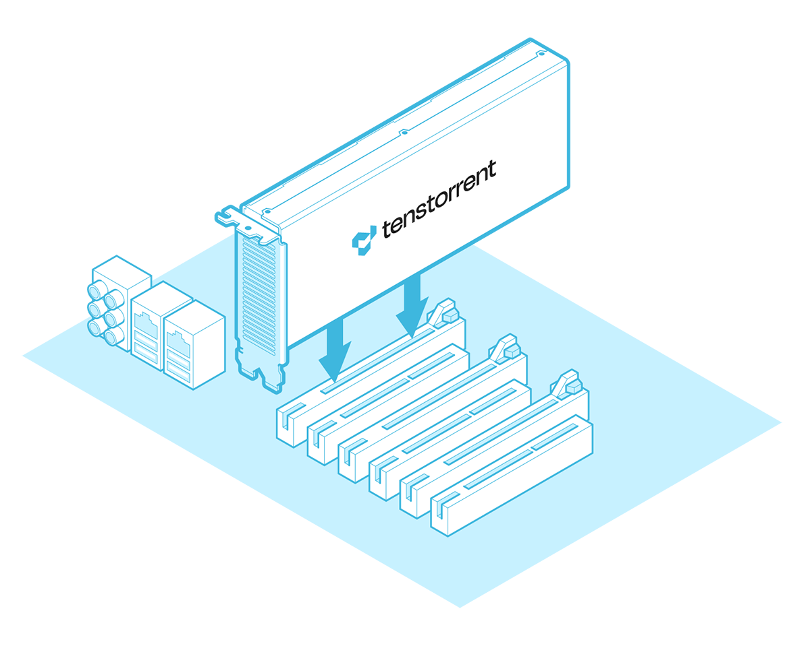
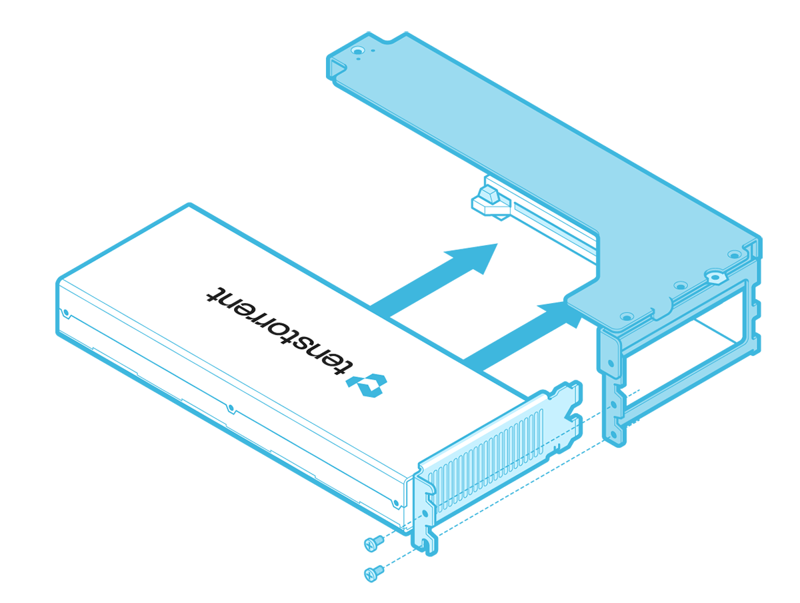
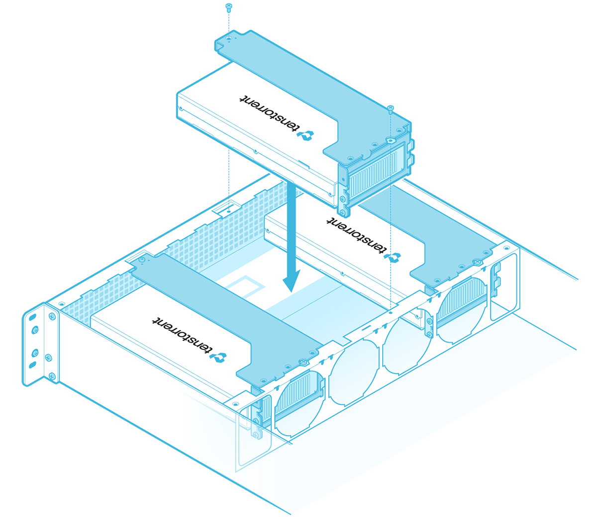
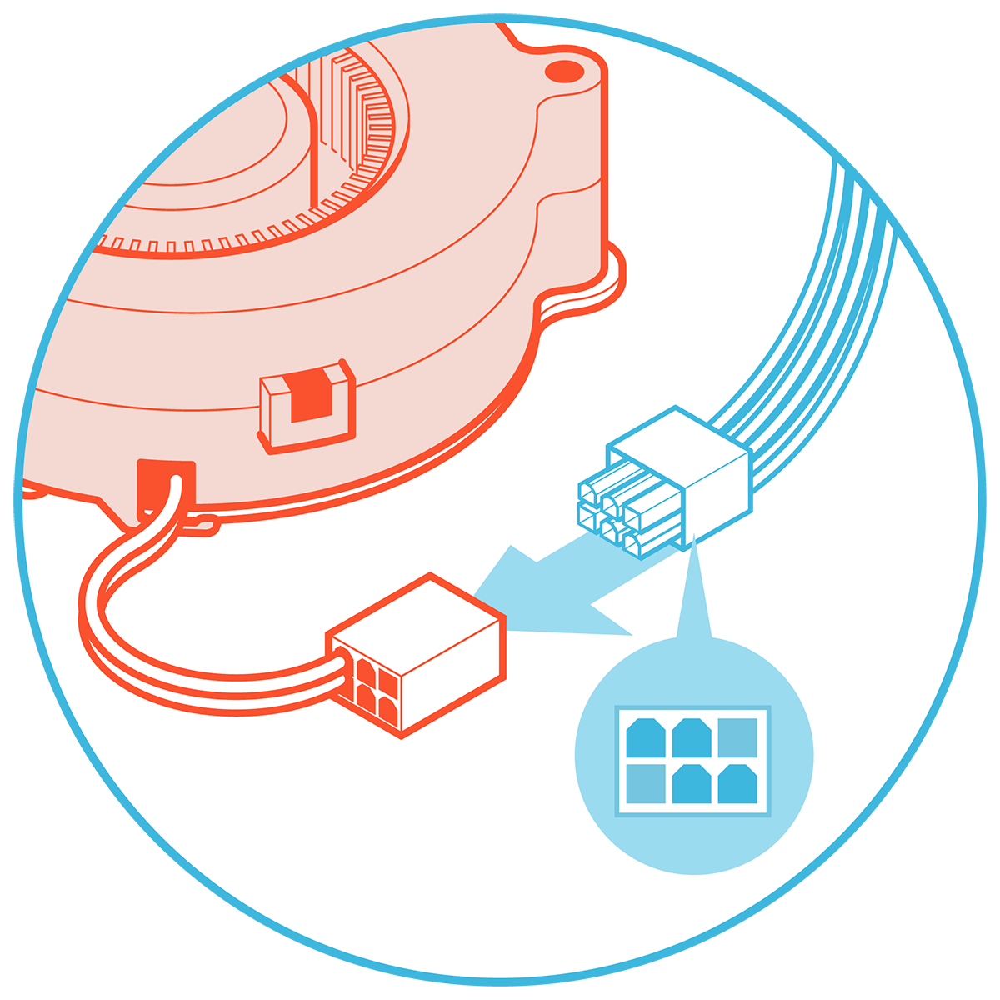
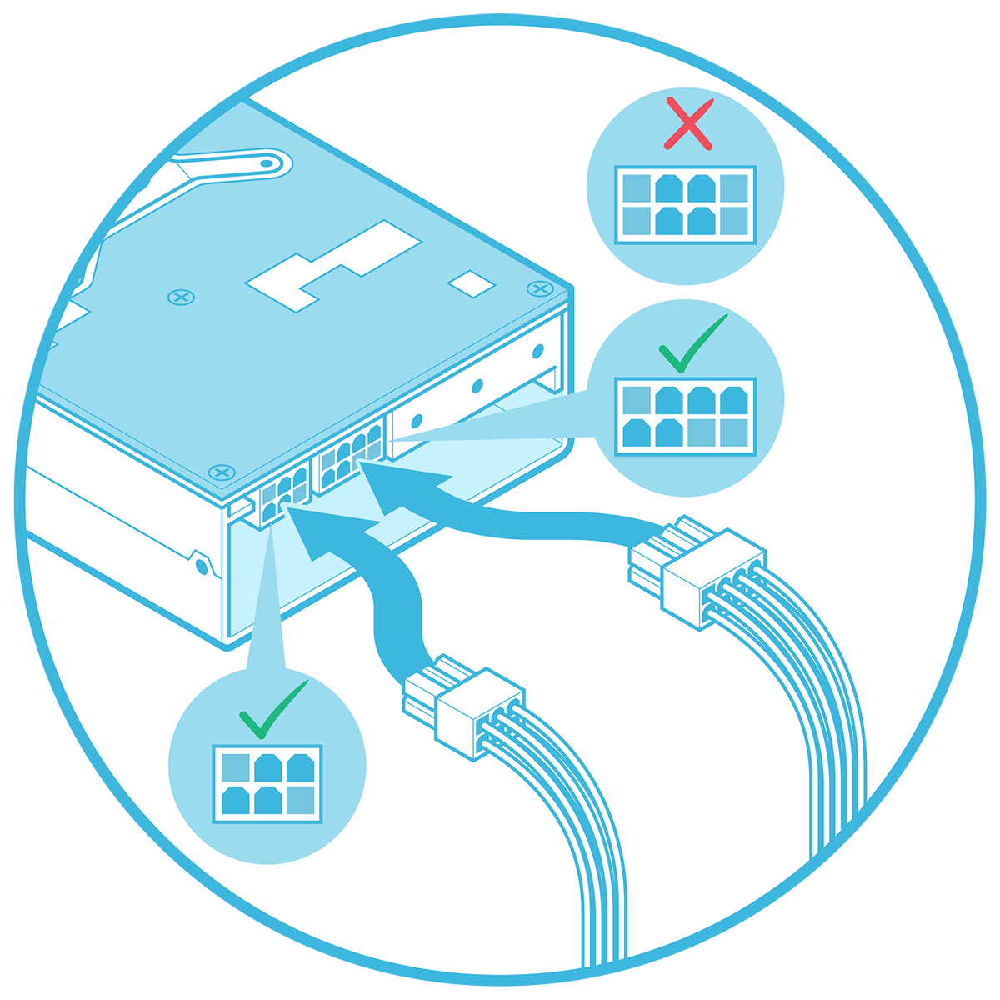
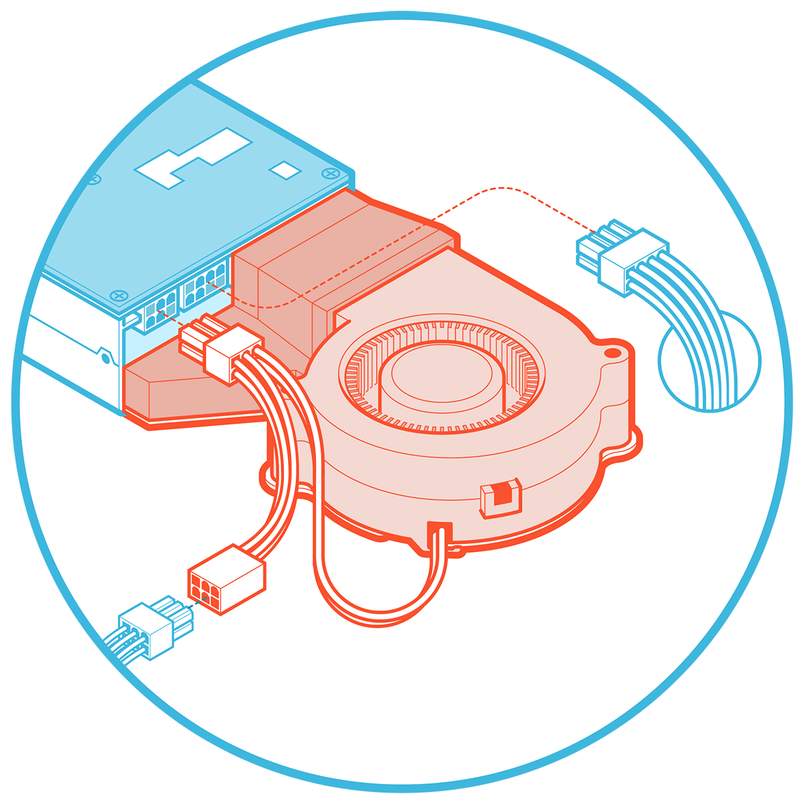

Hardware Installation
Follow these instructions to install your Tenstorrent Grayskull™ e75/e150 Tensix Processor add-in board.
System Installation
Pre-Installation
Disconnect power to the host computer prior to installation.
Verify that the system provides the following:
PCI Express 4.0 x16 slot (For optimal performance, the card requires a x16 configuration without bifurcation. The e150 is a dual-width card and requires the adjacent expansion slot to be vacant.)
One (1) PCIe 6-pin power connector
One (1) PCIe 6+2-pin power connector (e150 only)
Discharge your body’s static electricity by wearing an ESD wrist strap (recommended) or touching a grounded surface before touching system components or the add-in card.
Desktop Workstation Installation
(NOTE: Images shown may not be fully representative of your system.)
Physical Installation
Insert the card into the PCIe x16 slot and secure with necessary screws.

Server Installation
(NOTE: Images shown may not be fully representative of your system.)
1. Attach Housing
House the card in the casing.

2. Card Installation
Lower the encased card into the chassis and secure with the required screws.

Connecting Power
e75
Connect a 6-pin PCIe power cable to the 6-pin plug attached to the blower fan.

e150 (No Active Cooling Kit)
Connect an 6+2-pin PCIe power cable to the 8-pin plug and a 6-pin PCIe power cable to the 6-pin plug on the e150 card. (NOTE: Do not connect an 8-pin EPS12V power cable to the 8-pin port on the card.)

e150 (With Active Cooling Kit)
Connect a 6+2pin PCIe power cable to the 8-pin plug on the e150 card. (NOTE: Do not connect an 8-pin EPS12V power cable to the 8-pin port on the card.) Connect a 6-pin PCIe power cable to the female 6-pin plug of the fan harness, then connect the male 6-pin plug of the fan harness to the 6-pin plug of the e150 card.

Software Setup
Instructions on how to set up software on your e75/e150 are available here.